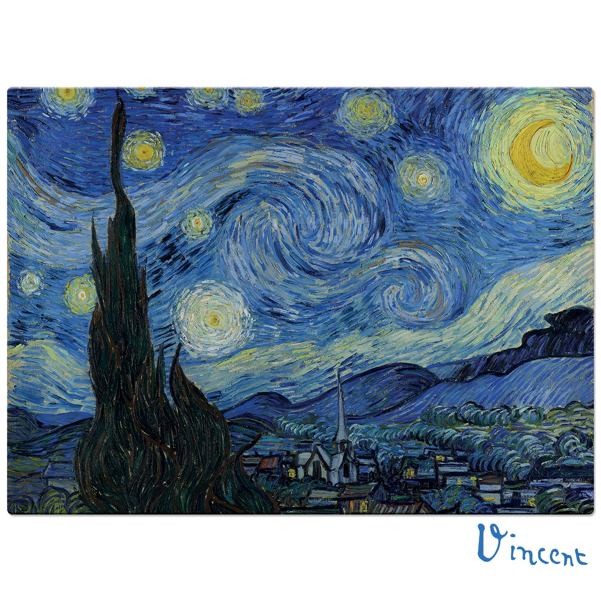

Durante as férias, entrei em um novo emprego como estagiária no Divino Fogão, minha chefe do Porco Rosa ficou de olho em mim na intenção de me colocar para trabalhar fixo para eles também daqui um tempo, comecei a vender minha arte na rua e tive um ótimo retorno, meus acessórios fizeram sucesso entre os visitantes do parque do Pedroso. Foi bem cansativo e passei a maior parte das férias trabalhando, mas também foi muito gratificante.
Hobbies
Iniciei um quebra-cabeça de 1000 peças da obra Noite Estrelada de Van Gogh, adoro quebra-cabeças grandes, mas não consegui terminar porque passei a maior parte do tempo trabalhando, também pintei e estilizei as calças da minha namorada, fizemos 3 calças juntas, uma do Bob Esponja, uma do Homem-Aranha e outra com coisas aleatórias que tinham significado para ela, além disso também fiz meus acessórios para vender, que é um trabalho mas também é um hobby, me sinto calma quando faço minhas peças.

Passeios
Fui para alguns churrascos, mas foram poucos, em um deles fui com minha namorada para uma casa com piscina, aproveitamos bastante e ficamos muito felizes de poder ser nós mesmas e agir como um casal em público sem julgamentos, a casa era de uma amiga minha e a família dela nos acolheu muito bem; visitei o museu Catavento com minha prima de Curitiba que passou as férias aqui em São Paulo, também aproveitei para levar meus 3 sobrinhos ao cinema com ingressos que ganhei no serviço, eles adoraram o passeio e se comportaram super bem, não tive nenhum trabalho com eles.